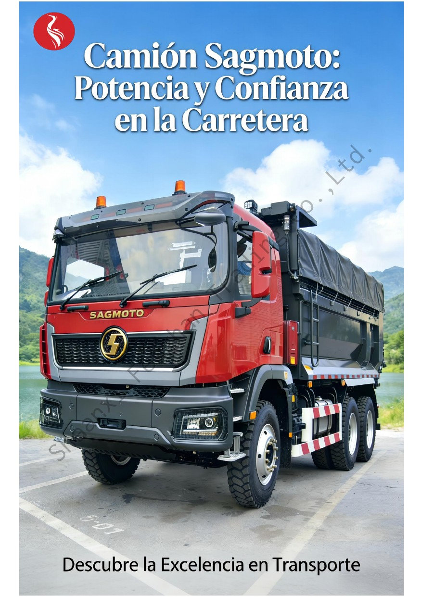
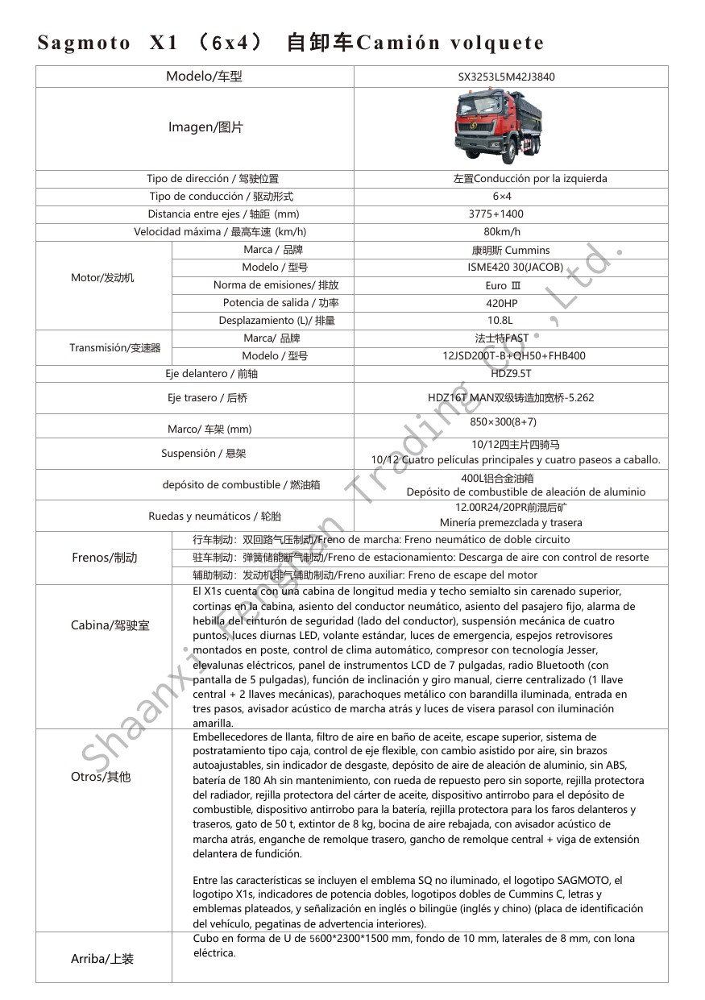

SAGMOTO X1s 6x4 Camión Volquete
Configuración para trabajo pesado con motor Cummins de 420 HP, transmisión FAST y caja basculante en U. Consulte opciones de exportación para República Dominicana, Costa Rica, Centroamérica y Sudamérica.
Ver ficha técnicaSolicitar cotización
Especificaciones verificadas
| Modelo | SX3253L5M42J3840 |
|---|---|
| Tracción | 6×4, volante a la izquierda |
| Motor | Cummins ISME420 30 (JACOB), 420 HP, 10,8 L |
| Emisiones | Euro III |
| Transmisión | FAST 12JSD200T-B + QH50 + FHB400 |
| Distancia entre ejes | 3775 + 1400 mm |
| Velocidad máxima | 80 km/h |
| Neumáticos | 12.00R24 / 20PR |
| Depósito | 400 L, aleación de aluminio |
| Caja basculante | Forma U, 5600 × 2300 × 1500 mm; fondo 10 mm, laterales 8 mm; lona eléctrica |
Importante: los datos corresponden a la configuración indicada en la ficha suministrada. Disponibilidad, precio, carga legal, homologación, emisiones y matriculación se confirman por escrito según el país de destino.
Consulta para América Latina
República Dominicana
Indique puerto de destino, tipo de obra, carga, rutas y requisitos locales para preparar la configuración y el transporte.
Costa Rica
Comparta las condiciones de carretera, pendientes, aplicación y requisitos de homologación para revisar la opción adecuada.
Centroamérica y Sudamérica
Atendemos consultas B2B por país, cantidad, operación minera o de construcción y condiciones de entrega.
¿X1s 6x4 o X1s 8x4?
X1s 6x4
Configuración de tres ejes, motor Cummins de 420 HP y caja de 5600 mm indicada en esta ficha. Es una opción a evaluar según carga, ruta y límites legales del país.
Comparar con X1s 8x4
El X1s 8x4 de cuatro ejes ofrece motor de 520 HP y caja de 7400 mm en su ficha.
Ver SAGMOTO X1s 8x4Antes de cotizar
Envíe país, puerto, cantidad, tipo de carga, pendientes y uso previsto para confirmar configuración y transporte.
Ficha técnica completa en español
Puede consultar las dos páginas del documento aquí o abrirlo en una pestaña nueva.


Preguntas frecuentes
¿Qué motor equipa el X1s 6x4?
Esta ficha especifica un Cummins ISME420 30 de 420 HP y 10,8 litros, Euro III.
¿Se puede cotizar para República Dominicana o Costa Rica?
Sí. Envíe país, puerto, cantidad y aplicación. Los requisitos legales y técnicos del destino se revisan antes de confirmar el pedido.
¿Cómo recibo precio y plazo?
Solicite cotización con el país de destino, cantidad y condiciones de trabajo para confirmar configuración, transporte y plazo vigentes.